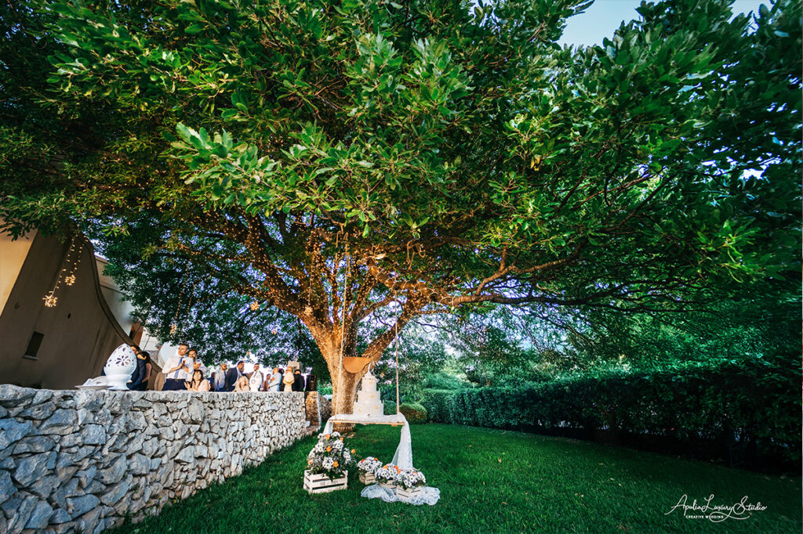

Non una location.
Un’esperienza che diventa un ricordo.
Il mare è sempre presente. Cinque ambienti che si scoprono uno dopo l’altro. Un luogo verticale, dove ogni livello rivela qualcosa di nuovo. Il vostro matrimonio sarà unico — non perché ve lo promettiamo, ma perché non può essere altrimenti.
Il Salento è molto più
di una destinazione
È un’esperienza sensoriale totale: la pietra calcarea levigata dal vento, il profumo del mare Adriatico, la luce calda che trasforma ogni istante in un ricordo indelebile.
Ma attenzione: non tutte le location sono uguali. Molte promettono il Salento e consegnano un banqueting hall con vista parcheggio. Molte hanno il mare — ma condiviso con turisti e bagnanti, nel bel mezzo della stagione.
Cala dei Balcani risolve questo problema. Non una masseria adattata. Non una struttura turistica che fa anche matrimoni. Cinque ambienti esclusivi, uno per ogni momento della giornata. Il mare sempre presente.


Un matrimonio che diventa una vacanza
Il vostro matrimonio può diventare un’esperienza da condividere prima e dopo il giorno del sì. Il Salento vi offre un programma inesauribile:
- ✓ Cammino del Salento — percorsi naturalistici tra ulivi e fichi d’India
- ✓ Mare ed Escursioni — grotte marine, calette nascoste, fondali cristallini
- ✓ Relax — ritmi lenti, tramonti lunghi, aria salmastra
- ✓ Sapori e Degustazioni — olio, vini primitivo e negroamaro, pasticciotti
- ✓ Otranto, Lecce, Castro — borghi storici a pochi minuti



Tutto quello di cui avete bisogno,
in un unico posto
Network Fornitori Locali
Fotografi, fioristi, grafici e designer locali coordinati da noi. Per chi organizza dall’estero, un supporto fondamentale.
Cucina Internazionale & Salentina
Menù personalizzati con attenzione alle intolleranze. Gli ospiti internazionali rimangono entusiasti della cucina locale.
Staff Multilingue
Comunicazione fluida con sposi e ospiti internazionali. Assistenza prima, durante e dopo il grande giorno.
Cerimonia Civile Ufficiale
Cala dei Balcani è Casa Comunale. Sposatevi ufficialmente vista mare, nel cuore del Salento.
Esclusività Totale
Un solo evento al giorno. La struttura è interamente vostra. Nessun altro matrimonio, nessun estraneo.
Il Mare Sempre Presente
Cinque ambienti, cinque punti di vista sul mare Adriatico. Un percorso che si scopre livello dopo livello.
Il matrimonio intimo
che sognavi
Se sogni un matrimonio circondato solo dalle persone più care, Cala dei Balcani è il luogo ideale. Perfetta per matrimoni intimi, dove ogni dettaglio racconta una storia d’amore unica.
I vostri ospiti arrivano dall’estero? Cala dei Balcani diventa per loro un’introduzione autentica al Salento — e la porteranno nel cuore ben oltre il giorno del sì.

“Cala dei Balcani è la scelta perfetta per unire due culture in un unico scenario magico. Il nostro matrimonio è stato definito dagli invitati come ‘divertente e dinamico’, reso possibile dalla pazienza e professionalità di Francesco e di tutta la squadra.”— Vanessa & Omar, coppia internazionale
Inizia a Pianificare il Tuo Matrimonio
Raccontaci il vostro sogno. Vi risponderemo entro 24 ore con tutte le informazioni di cui avete bisogno.